“You’ve got to be in the field, in the forest, in the water to appreciate the field, the forest and the water. I can show them Douglas firs on PowerPoint, and it’s just a tiny fraction of what you learn when you come out and you can put your hands on a Douglas fir. It’s literally a breath of fresh air for the students who are coming from Seattle.”
Dr. Eric Long, SPU professor of biology
For a dozen students at Seattle Pacific University, the trip to the Blakely Island field station in Washington state’s San Juan Islands will complete a science requirement begun online. These were not biology majors but included students with majors from political science to criminology. They stepped off the Paraclete water taxi with little knowledge of science or the outdoors and no idea what to expect. Thanks to Professor Ryan Ferrer, this was about to change.
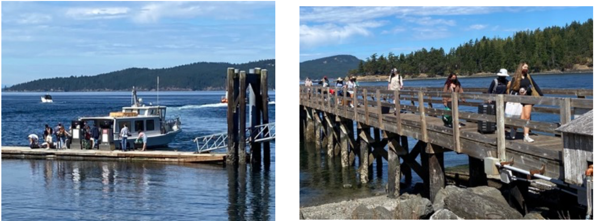
“My hope is that they will have a different perspective on nature and on science in particular…when voting, when making decisions about how to treat nature, how to treat their bodies with health care decisions… that they are more familiar with scientific inquiry and evidence-based decisions.”
Dr. Ryan Ferrer, SPU professor of biology
Seattle Pacific University is a small liberal arts school founded in 1891 by the Free Methodist Church of North America. It has maintained a biology field station on Blakely for 45 years, offering immersive two-week summer courses and weekend field trips in such subjects as forestry, conservation biology, marine botany, astronomy, and environmental ecology as well as a five-day general introduction to biology that this group of students will experience. Those of us with homes on the island welcome the university activities and benefit from occasional astronomy or deer lectures open to the public. Blakely is unique in offering environments for study at two freshwater lakes, the saltwater Salish Sea with its rocky beaches and tide pools, and heavily forested hills carved out by glaciers tens of thousands of years ago. Populated with black-tailed deer, bald eagles, osprey, raccoons, squirrels, otters, seals and more in adjacent waters, the island has two concentrated residential areas for about 100 property owners and an air strip, but most of the seven square-mile island is in its natural state, subject only to selective logging.
“I’m getting a lot of inspiration here, honestly. I wish I had more time to write in my own time.”
Helen Peterson, English and creative writing major
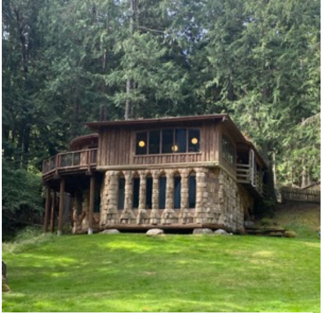 SPU biology field station main building |
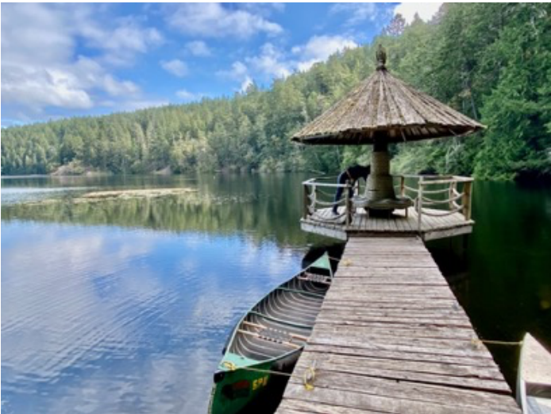 SPU biology field station dock on Spencer Lake |
The late Thomas B. Crowley, Sr., owner of Crowley Marine, donated 967 acres in 1976, then built and endowed the field station as a way of preserving much of the island in its natural state and supporting SPU’s mission of teaching about nature and the environment. His talented woodworker Gordon Plume built the handsome field station buildings with lumber and rock from the island. The campus, about three miles from the Blakely marina, includes a dock and raft on Spencer Lake, dorm rooms, a science lab, living room, kitchen, dining room and faculty apartment.
To give the students an overview of the island, their arrival day featured a trip to Blakely’s highest point, the Peak, providing a dramatic view of the northwest San Juan islands and in the far distance, Vancouver Island, British Columbia.
“On day one we went to the Blakely Peak…we were able to see the sunset…and all the different islands surrounding the area, and it was so great!”
Naide Perez, social justice and cultural studies major
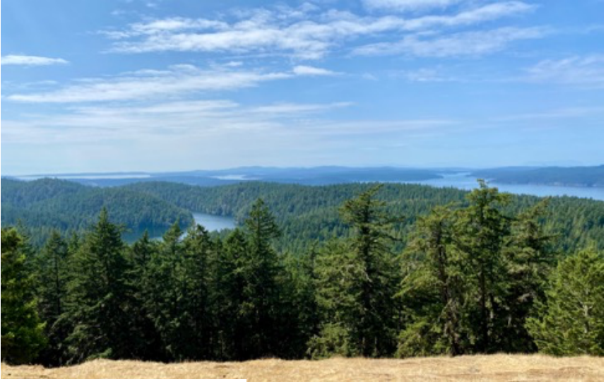
The stage was set for the first full day of field class, exploring the forest.
“I’ve seen a lot of trees in my life, but there are so many trees here!”
Alex Christiansen, political science major
“We learned how to get a little tree core…it was so interesting to find out how to find the age
of a tree!”
Jannice Barbosa-Buenrostro, social justice and cultural psychology major
“I hadn’t really paid attention to how many varieties of trees are around you because you go by
them so fast. I really enjoyed like looking at the different leaf shapes and bark shapes.”
Helen Peterson, English and creative writing major
Having learned the differences among pine, fir, maple, cedar trees and more about the island’s flora, students spent the morning of day three on the university’s raft in the middle of Spencer Lake. Following a briefing by Dr. Ferrer on measurements and equipment on shore, the class headed to the dock. Professor Ferrer stressed how basic the field collection equipment was compared to high tech devices more difficult to use and if necessary, repair in the field. Carrying thermometers, turbidity (water clarity) measuring devices, plankton strainers and jars for water samples, teams of three took canoes and a rowboat to see what the lake contained. I was invited to join Dr. Ferrer in his canoe to observe and learn myself about the lake in which I had swum so many times in ignorance!
“I was surprised by how few people live here all year round. I enjoy how natural it is.”
Maren Pingree, criminology major
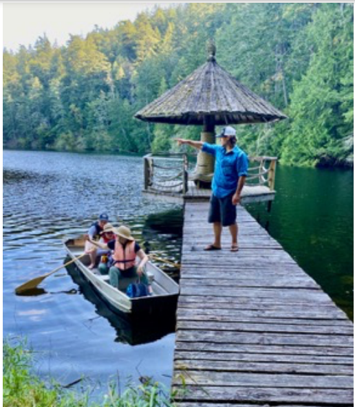 Dr. Ferrer points the way |
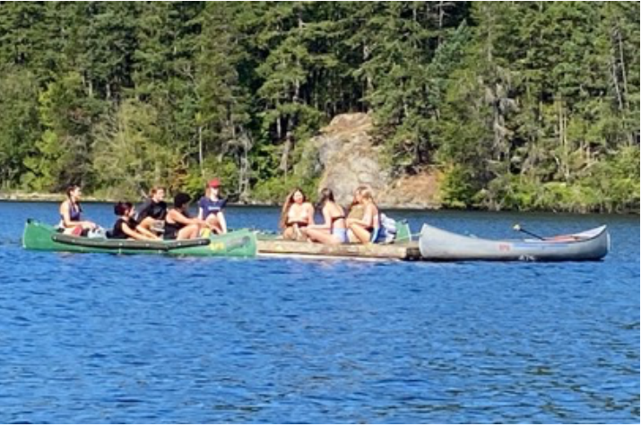 Students gather at the university’s raft in Spencer Lake |
Each team took turns measuring clarity of the water by recording how deep one could see a black and white disc on a segmented rope, checking the temperature differences between the top and bottom of the lake, capturing tiny creatures in a fine mesh and then a looser mesh pouch. The vitality and density of life in the lake amazed the students, who began to see connections to their majors.
“The design of the place is really beautiful…It’s making me more aware of our carbon footprint. Maybe the fashion industry can learn something from it.”
Joyce Park, fashion merchandising and fashion design major
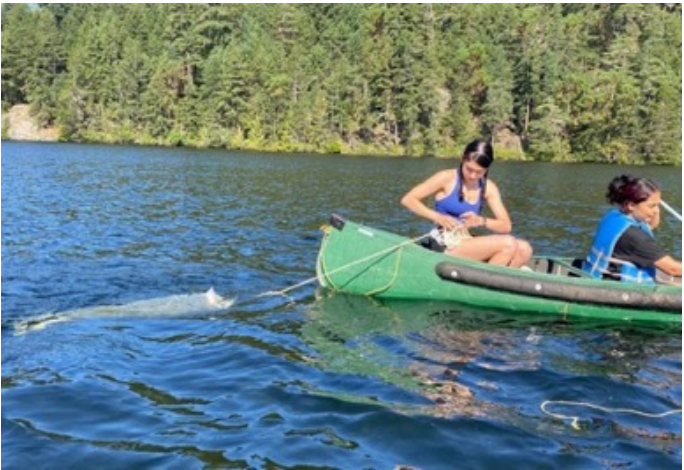 Dragging a mesh pouch to see what lives in the lake Tiny lake dwellers captured for study in a jar marked |
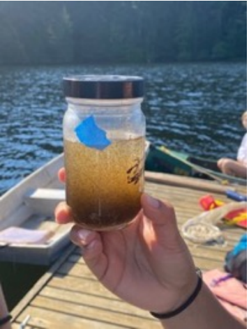 Tiny lake dwellers captured for study in a jar marked with blue tape |
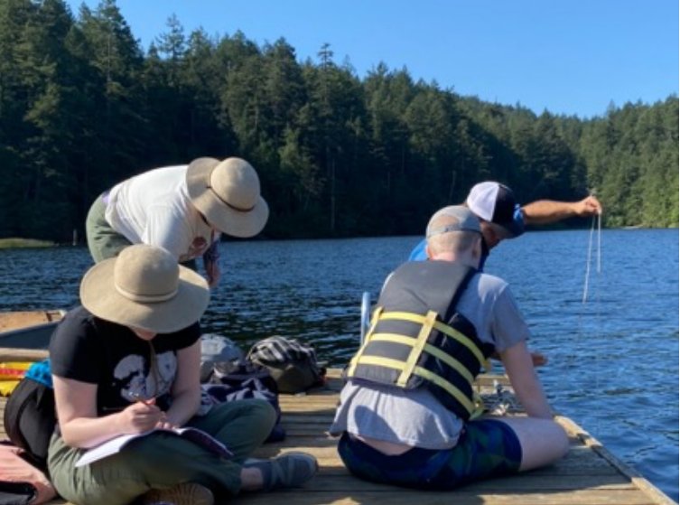
The group went on to Horseshoe Lake to take the same measurements and compare the two bodies of water, quite similar although one is stocked with bass and the other with trout. They would spend the afternoon in the lab analyzing their data under a microscope.
Having learned the basics of fresh water, the group spent the next morning on the seashore at Driftwood Beach for an exploration of salt water tidal pools – the seawater remaining among the barnacle-covered rocks at low tide. Each team selected a pool to measure for size, salinity, temperature, distance from the shoreline, and number of observable animals; the teams then chose new pools to test for comparison.
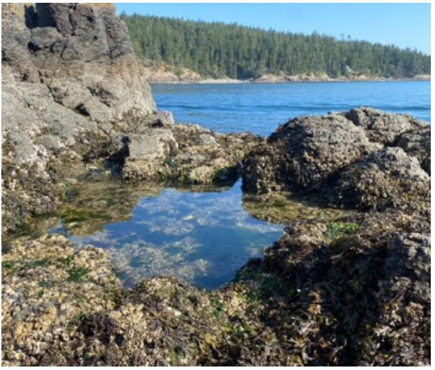
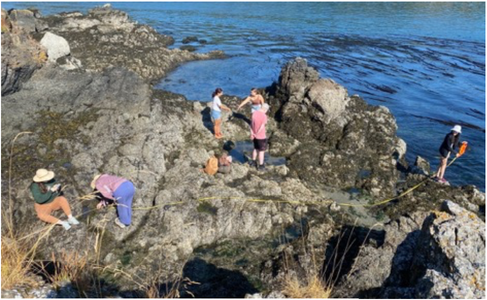
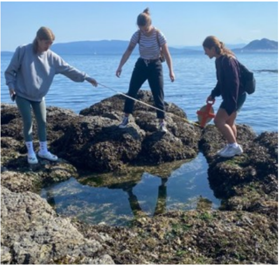
“I never realized how many species could live in one small body of water that comes from the beach. I got to see star fish for the first time!”
Naide Perez, social justice and cultural studies major
There are other areas of research ongoing at the field station. Dr. Eric Long has studied the black-tail deer population here for 16 years. As residents, we take delight in seeing deer in the woods and even on our property on a regular basis. Some residents use the brief hunting season to fill their freezers with venison. Deer challenges are well known to suburban Chicagoans, whose gardens can be decimated in an hour or two. Here on Blakely, too, homeowners must build high fences to protect their dahlias and daisies, arugula and strawberries.
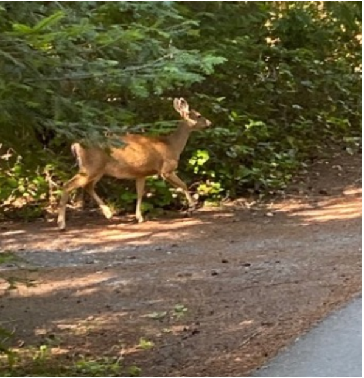 A doe explores our neighbor’s property |
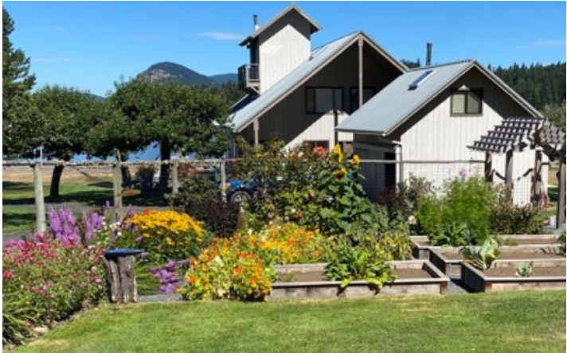 A high fence protects an island garden |
What’s unique about Blakely deer is their size; they are small compared to their mainland cousins. Although deer are known to swim between islands, the Blakely herd appears to have kept to itself, mating with close relatives. Their natural predators that once populated the island including cougars and wolves are long gone, driven out by early settlers. The herd is barely affected by annual hunting and is limited only by the amount of food available. Dr. Long points out that in addition to occasional droughts, the maturing forest canopy cuts off sunlight, reducing the undergrowth that the deer prefer. He estimates that there was once a relatively stable population of 500 deer, now around 350. Students do an annual deer count to monitor the population, currently declining by about 4% a year until they reach a new equilibrium with the food supply.
Although counting deer was not on the current group’s agenda, the students had a packed week. For their final evening on Blakely, they gave presentations on special projects and the results of their research. Their week on Blakely wrapped up Friday morning, and they headed for the boat home.
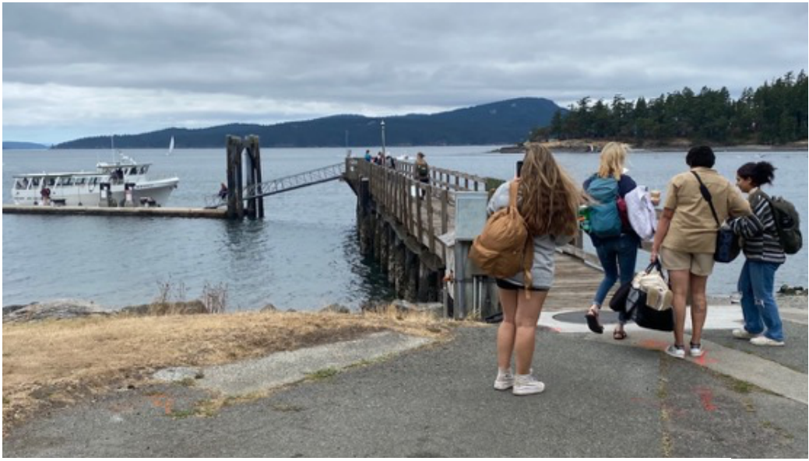
“It’s been a lot different from what I thought it would be. I thought we’d be at the field station, talking about stuff. But we got to do our own research at different spots on the island, like a real scientist.”
Dominique Shipman, political science major and philosophy minor
“It was a lot more than I expected…a lot of fun… so many bugs, but we fought them off! I learned a lot about trees. I was able to understand everything we did…it’s applicable to everything pretty much…It was an amazing experience…very, very informative and really beautiful. The week has been so great! I’m so sad to go. Seeing the luggage here is the saddest part. Such a great experience!”
Melody Stice – psychology and cultural anthropology major
“To get to hear the enthusiasm in their voices when they get to experience the things they experience here is really very special.”
Dr. Ryan Ferrer, SPU professor of biology
For those of us fortunate enough to have homes on Blakely Island, it’s valuable to see the island through fresh young eyes and take time to learn about the habitat we disrupt with our houses and boats and planes. The SPU team is sharing our wealth of nature with the next generation. We need to pay attention.